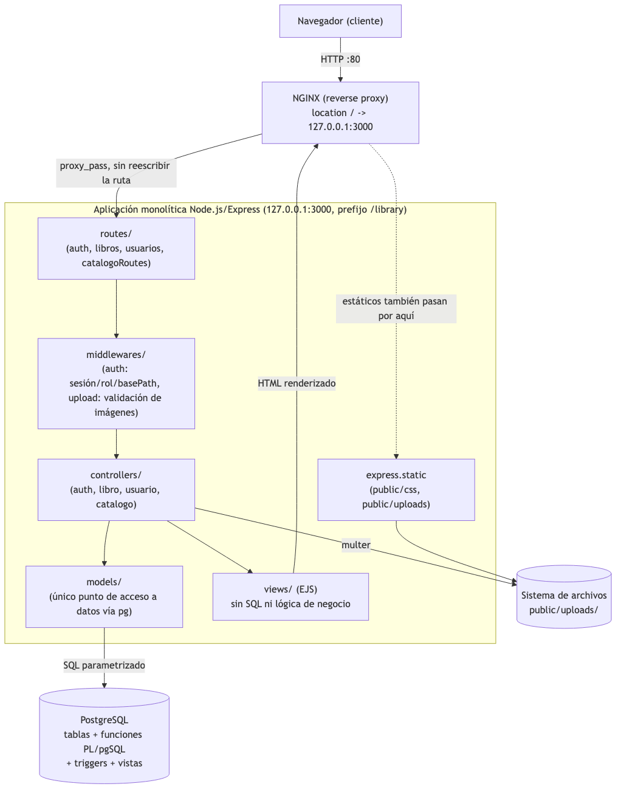
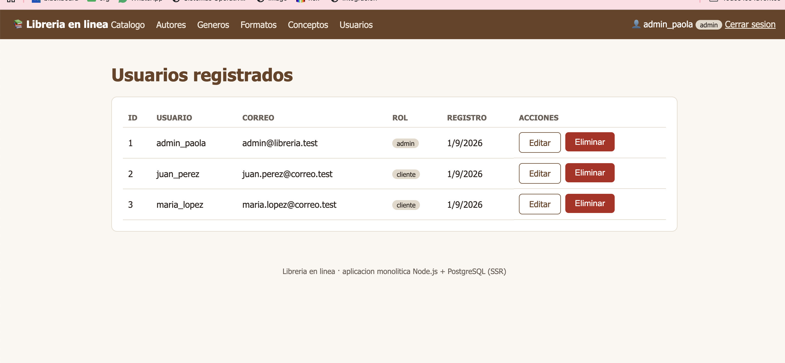
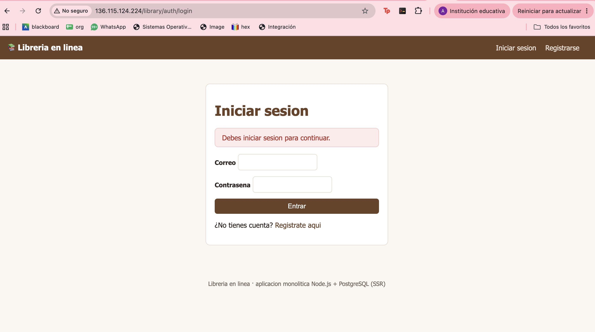
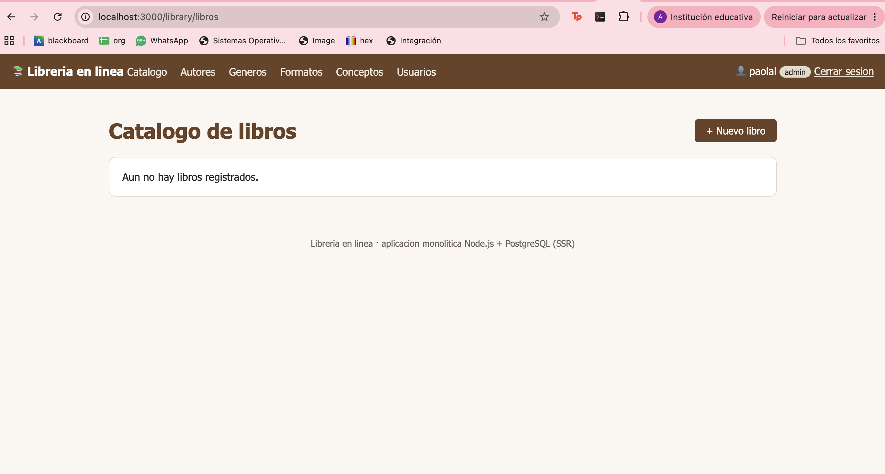
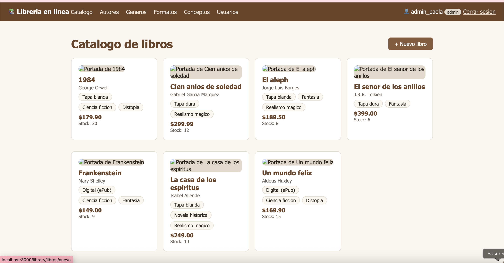
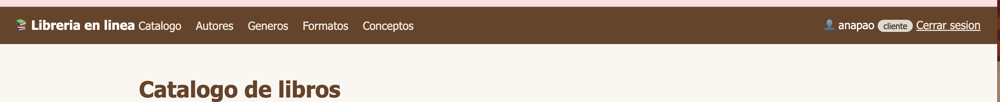
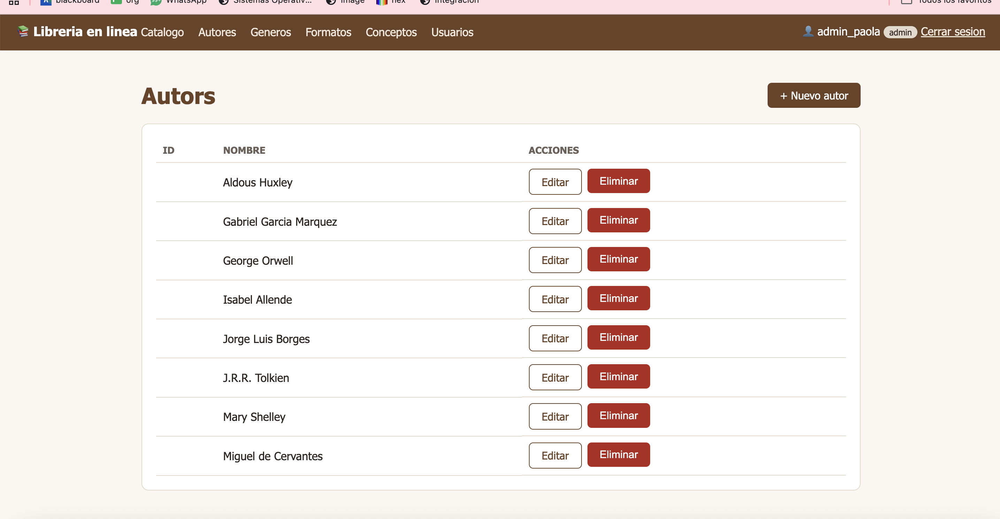
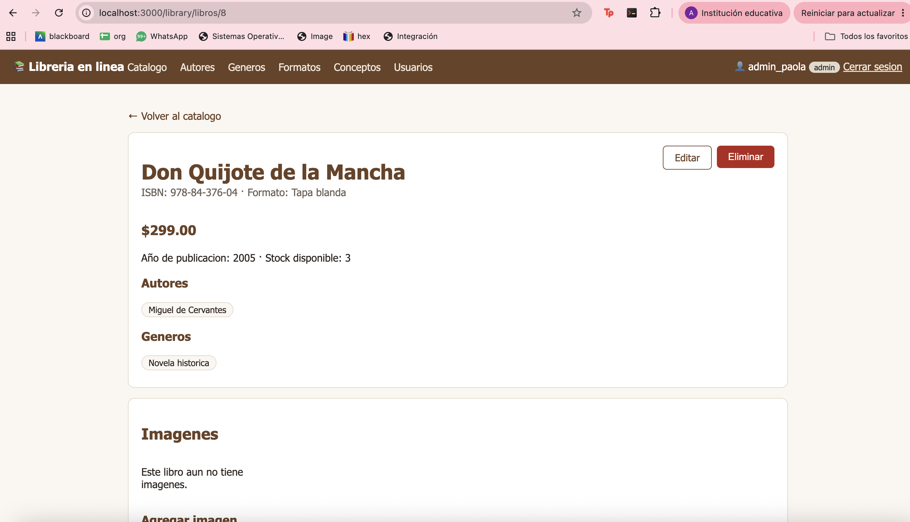
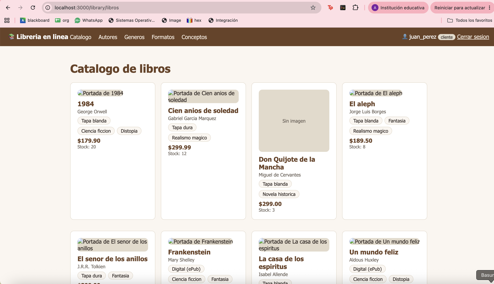

Ejercicio Guiado 02
Aplicación Web Monolítica para Gestión de una Librería
GCP SDK CLI · Compute Engine · CentOS Stream 10 · Node.js · Express · EJS · PostgreSQL · 4FN · CRUD · Uploads · Autenticación · Apache/NGINX
| Materia | Integración de Aplicaciones Computacionales |
|---|---|
| Profesor | Dr. Raúl Morales Salcedo |
| Alumna | Ana Paola Loredo Moreno |
| Matrícula | 613772 |
| Fecha | 31 de agosto de 2026 |
Doy mi palabra de que he realizado esta actividad con integridad académica.
Índice
- Objetivo y alcance
- Análisis de requisitos
- Decisiones de arquitectura y diagrama del monolito
- Diseño de la base de datos, diagrama ER y 4FN
- Infraestructura GCP y PostgreSQL
- Estructura de módulos de Node.js
- Funcionalidades implementadas
- Seguridad y roles
- Plan y resultados de pruebas
- Despliegue con Apache/NGINX
- Galería de evidencias
- Decisiones de ingeniería y problemas resueltos
- Uso documentado de Inteligencia Artificial
- Conclusiones y mejoras futuras
- Descargas
Ejercicio Guiado 02: Librería en línea
Aplicación web monolítica (Node.js + Express + EJS) para la gestión de una
librería en línea, con acceso directo a PostgreSQL, publicada detrás de un reverse proxy
bajo el prefijo /library.
1. Objetivo y alcance
Diseñar, construir, probar, desplegar y documentar una aplicación web monolítica en Node.js para la gestión de una librería en línea, utilizando PostgreSQL mediante acceso directo desde la aplicación (sin ORM). El propósito no es únicamente "hacer que el sistema funcione", sino tomar y justificar decisiones de ingeniería: análisis de requisitos, modelado de datos, arquitectura, organización del código, seguridad, validación, documentación de riesgos y publicación de evidencia reproducible.
Restricciones arquitectónicas respetadas
Un único proceso Node.js + Express + EJS renderiza HTML del lado del servidor.
No hay REST, GraphQL, SOAP ni microservicios. No se usa JSON/XML entre frontend y backend; los formularios HTML envían datos directamente al monolito.
El driver pg ejecuta funciones PL/pgSQL parametrizadas; no se
concatena SQL con datos del usuario.
Regla de negocio reforzada tanto en la aplicación como con un índice único en PostgreSQL.
2. Análisis de requisitos
Fuente completa: docs/REQUIREMENTS.md · matriz en Excel: docs/REQUIREMENTS.xlsx.
Alcance
Aplicación web monolítica (Node.js + Express + EJS, renderizado server-side) para la
gestión de una librería en línea, con acceso directo a PostgreSQL mediante pg y
consultas parametrizadas. Sin APIs REST/GraphQL/SOAP ni intercambio de datos vía JSON/XML
entre frontend y backend.
Actores
| Actor | Puede | No puede |
|---|---|---|
| Visitante | Acceder a login y registro; páginas públicas expresamente autorizadas | Consultar catálogo, ver conceptos, acceder a CRUD |
| Usuario registrado | Consultar catálogo, buscar por ISBN/título, ver detalle de libro y conceptos | Crear/editar/eliminar libros, catálogos o usuarios; administrar imágenes |
| Administrador (máx. 1) | CRUD completo de libros, autores, géneros, formatos, conceptos, imágenes y usuarios | Existir más de un Administrador en el sistema |
Requisitos funcionales
| ID | Requisito | Criterio de aceptación |
|---|---|---|
| RF-01 | Registro de nuevos usuarios | Un visitante crea una cuenta con usuario, correo y contraseña; la contraseña se guarda con hash |
| RF-02 | Inicio de sesión | Un usuario registrado accede con credenciales válidas y obtiene una sesión activa |
| RF-03 | Cierre de sesión | Al cerrar sesión, la sesión se invalida y se redirige a una página pública |
| RF-04 | Consulta del catálogo por usuarios autenticados | El catálogo se muestra con los datos básicos de cada libro |
| RF-05 | Búsqueda por ISBN y por título | Una búsqueda por ISBN exacto o título parcial devuelve los libros coincidentes |
| RF-06 | CRUD de libros (Administrador) | Formulario, validación server-side y confirmación de resultado por operación |
| RF-07 | CRUD de autores (Administrador) | Igual que RF-06, aplicado a autores |
| RF-08 | CRUD de géneros/categorías (Administrador) | Igual que RF-06, aplicado a géneros |
| RF-09 | CRUD de formatos (Administrador) | Igual que RF-06, aplicado a formatos |
| RF-10 | CRUD de conceptos y sus definiciones (Administrador) | Un concepto puede asociarse a varios libros con definición distinta en cada uno |
| RF-11 | Asociación de varios autores y géneros a un libro | Al editar un libro se agregan/quitan autores y géneros sin duplicar registros |
| RF-12 | Conceptos y definiciones específicas por libro | La definición pertenece a la relación libro-concepto, no al concepto en general |
| RF-13 | Carga, edición y eliminación de imágenes | Se aceptan JPG/PNG/WebP vía multipart/form-data; nombre de archivo generado por el sistema |
| RF-14 | Marcar una imagen como portada | Como máximo una imagen por libro queda marcada como portada |
| RF-15 | Control de stock y precio | No se permite stock negativo ni precio inválido (< 0) |
| RF-16 | Un único Administrador | Un intento de crear un segundo Administrador es rechazado por la base de datos |
| RF-17 | Autorización por rol en cada ruta | Un usuario regular que intenta una ruta administrativa recibe acceso denegado controlado |
Requisitos no funcionales
| ID | Requisito | Criterio de aceptación |
|---|---|---|
| RNF-01 | Seguridad | Contraseñas con hash, sesiones seguras, SQL parametrizado, .env fuera del control de versiones |
| RNF-02 | Mantenibilidad | Separación de responsabilidades: rutas, controladores, modelos, vistas, middleware |
| RNF-03 | Integridad de datos | Esquema normalizado hasta 4FN con PK, FK, UNIQUE y CHECK en PostgreSQL |
| RNF-04 | Rendimiento básico | Índices en columnas de búsqueda frecuente (ISBN, título) |
| RNF-05 | Usabilidad | Formularios con validación visible y mensajes de error/éxito claros |
| RNF-06 | Disponibilidad | La aplicación responde de forma consistente detrás del reverse proxy (/library) |
| RNF-07 | Trazabilidad de errores | Errores registrados en servidor sin exponer detalles internos ni SQL al usuario final |
| RNF-08 | Facilidad de despliegue | Scripts SQL numerados y ejecutables en orden reproducible sobre una instancia nueva |
Supuestos y restricciones
- El primer usuario registrado se designa automáticamente como Administrador.
- "Género" y "categoría" se tratan como el mismo catálogo (
generos). - Un único servidor, sin balanceo de carga ni réplicas; imágenes en el sistema de archivos local (
uploads/). - Sin APIs ni JSON/XML entre frontend y backend; Node sólo escucha en
127.0.0.1:3000, expuesto vía Apache/NGINX.
Riesgos identificados
| Riesgo | Mitigación prevista |
|---|---|
| Acceso no autorizado a rutas administrativas | Middleware de autenticación + autorización por rol |
| SQL Injection | Consultas parametrizadas con pg, nunca concatenación de strings |
| Subida de archivos peligrosos | Validación de extensión/MIME/tamaño; nombre de archivo generado por el sistema |
| Exposición de credenciales | Variables de entorno (.env), excluidas del repositorio y del .tar.gz de entrega |
| Eliminación accidental de información | Restricciones ON DELETE explícitas y confirmaciones en la interfaz |
| Publicación de datos sensibles | Revisión previa a publicar en ubiquitous.udem.edu (sin contraseñas, tokens ni .env) |
RF-05 (búsqueda por ISBN/título) ya está implementado —
LibroModel.listarConDetalle, LibroController.catalogo y
libros/catalogo.ejs— y RNF-04 ya contaba con índice en titulo
y restricción única en isbn. Ver evidencia en la
sección 9.
3. Decisiones de arquitectura y diagrama del monolito
Flujo de una solicitud: Navegador → Apache/NGINX (prefijo /library) →
Node.js/Express (127.0.0.1:3000) → middleware → rutas/controladores → modelos (pg)
→ funciones PL/pgSQL → PostgreSQL. Toda la interfaz, la lógica de negocio y el acceso
a datos viven en un único proceso desplegable; la "modularidad" es organización interna del
código, no separación en servicios independientes.

Generado a partir de la estructura real del proyecto (no es un boceto aparte): muestra presentación, rutas/controladores, middleware, acceso a datos, vistas, estáticos, PostgreSQL y almacenamiento de imágenes. Archivo también disponible en docs/ARCHITECTURE_MONOLITHIC.png.
{kind=link}
Patrón de presentación y organización del código (MVC server-side)
| Carpeta / archivo | Responsabilidad real en este proyecto |
|---|---|
app.js | Inicializa Express, define BASE_PATH, monta middleware general (urlencoded, method-override, sesión), monta estáticos y rutas bajo el prefijo, arranca el servidor en 127.0.0.1:PORT. |
config/db.js | Pool único de conexión a PostgreSQL (pg). |
routes/ | Recepción de solicitudes HTTP y despacho a controladores (index.js, auth.js, libros.js, usuarios.js, catalogoRoutes.js). |
controllers/ | Reglas de aplicación: valida entradas, invoca modelos, arma la respuesta (render o redirect). Incluye una fábrica (catalogoController.js) reutilizada por formatos/géneros/autores/conceptos. |
models/ | Único punto de acceso a datos; cada función llama a una función PL/pgSQL (fn_*) en PostgreSQL. |
middlewares/ | auth.js (sesión, rol, inyección de usuario y de basePath), upload.js (validación de imágenes con multer). |
views/ | Plantillas EJS puras; no contienen SQL ni lógica de negocio. |
public/ | CSS y archivos subidos (public/uploads/). |
Reverse proxy y prefijo /library
La app nunca se expone directamente a Internet: escucha en 127.0.0.1:3000 y
Apache/NGINX publica /library hacia ella. Para que Express reconozca el prefijo
reenviado tal cual por el proxy, se introdujo una constante BASE_PATH
(variable de entorno con fallback a /library) que:
- Monta el router principal y
express.staticbajoBASE_PATHen vez de"/". - Inyecta
res.locals.basePathen un middleware temprano, disponible en toda vista EJS. - Se usa en cada
res.redirect()de controladores y middlewares (requerirSesion,redirigirSiAutenticado, login/logout, CRUD) para que el navegador nunca salga del prefijo publicado. - Ajusta
cookie.pathdeexpress-sessionpara que la cookie sea válida bajo/library. - Con
BASE_PATH=''la app se comporta igual que antes, montada en la raíz — útil para desarrollo local sin el prefijo.
Detalle completo en la sección de despliegue.
4. Diseño de la base de datos, diagrama ER y 4FN
Esquema implementado en data/library_schema.sql (tablas + índices) con lógica de
acceso encapsulada en funciones PL/pgSQL (fn_crear_*, fn_listar_*,
fn_actualizar_*, fn_eliminar_*, fn_asociar_*).
| Tabla | Rol en el modelo |
|---|---|
usuarios | Cuentas registradas; rol restringido a admin/cliente vía CHECK. |
libros | Entidad central: ISBN, título, año, precio, stock, formato. |
formatos, generos, autores, conceptos | Catálogos independientes (id, nombre). |
libro_autor, libro_genero | Tablas puente N:M — resuelven las dependencias multivaluadas de autores y géneros por libro sin repetir columnas en libros. |
libro_concepto | Tabla puente N:M con atributo propio (definicion): mismo concepto puede tener definición distinta según el libro. |
imagenes_libro | Varias imágenes por libro; es_portada con índice único parcial que garantiza como máximo una portada por libro. |
Integridad reforzada en PostgreSQL (verificado en el esquema actual)
CHECK (rol IN ('admin','cliente'))enusuarios.CHECK (precio >= 0),CHECK (stock >= 0)y rango deanio_publicacionenlibros.uq_usuarios_admin_unico: índice único parcial que impide un segundo Administrador a nivel de base de datos (no sólo en la aplicación).uq_imagenes_portada_unica: índice único parcial (WHERE es_portada = true) para forzar una sola portada por libro.ON DELETE CASCADEenimagenes_libro.id_libro.
Diagrama ER
erDiagram
FORMATOS ||--o{ LIBROS : clasifica
LIBROS ||--o{ LIBRO_AUTOR : tiene
AUTORES ||--o{ LIBRO_AUTOR : escribe
LIBROS ||--o{ LIBRO_GENERO : tiene
GENEROS ||--o{ LIBRO_GENERO : clasifica
LIBROS ||--o{ LIBRO_CONCEPTO : define
CONCEPTOS ||--o{ LIBRO_CONCEPTO : "se define en"
LIBROS ||--o{ IMAGENES_LIBRO : tiene
USUARIOS {
int id_usuario PK
string nombre_usuario
string correo
string contrasena_hash
string rol
timestamp fecha_registro
}
LIBROS {
int id_libro PK
string isbn
string titulo
smallint anio_publicacion
numeric precio
int stock
int id_formato FK
}
FORMATOS {
int id_formato PK
string nombre_formato
}
AUTORES {
int id_autor PK
string nombre_autor
}
GENEROS {
int id_genero PK
string nombre_genero
}
CONCEPTOS {
int id_concepto PK
string nombre_concepto
}
LIBRO_AUTOR {
int id_libro FK
int id_autor FK
}
LIBRO_GENERO {
int id_libro FK
int id_genero FK
}
LIBRO_CONCEPTO {
int id_libro FK
int id_concepto FK
text definicion
}
IMAGENES_LIBRO {
int id_imagen PK
int id_libro FK
string url_imagen
smallint orden
boolean es_portada
}
Diagrama generado a partir de data/library_schema.sql real (no es un boceto aparte que se pueda desincronizar del código). USUARIOS no tiene FK hacia el resto del modelo — es intencional, la sesión/autenticación es independiente del catálogo de libros. También disponible como imagen estática: docs/DB_DESIGN_ER_4FN.png.
{kind=link}
Normalización demostrable 1FN → 2FN → 3FN/BCNF → 4FN
Documento completo, con el paso a paso y las anomalías concretas en cada forma normal (usando como ejemplo real el libro "Cien años de soledad", que en la BD de prueba tiene 3 autores y 3 géneros): docs/NORMALIZATION_4FN.md · plantilla en Excel con las mismas hojas: docs/NORMALIZATION_4FN.xlsx.
| Forma normal | Violación encontrada | Anomalía que resuelve |
|---|---|---|
| 1FN | Columnas autores/generos/imagenes/conceptos con listas dentro de una celda | No se puede filtrar por autor/género exacto ni garantizar que el mismo autor se escriba siempre igual |
| 2FN | titulo/precio/stock dependen sólo de isbn, no de la clave completa (isbn, autor, genero) | Cambiar el precio ya no exige actualizar N filas repetidas |
| 3FN/BCNF | formato/autor/genero/concepto guardados como texto libre repetido, no como entidades con clave propia | Renombrar un catálogo es un solo UPDATE, no uno por cada libro que lo usa |
| 4FN | Combinar autor+género+imagen en una sola tabla puente produce una "trampa de conexión" (3 autores × 3 géneros = 9 filas artificiales para el ejemplo real) | Cada MVD independiente (autor, género, imagen) vive en su propia tabla; agregar un autor no obliga a duplicar géneros |
Caso especial documentado: libro_concepto parece una cuarta
MVD independiente, pero no lo es — (id_libro, id_concepto) -> definicion es
una dependencia funcional real (el mismo concepto tiene definición distinta según el libro,
verificado en docs/TEST_PLAN.md TC-11), así que es una entidad asociativa con
atributo propio, no una tabla puente de solo llaves. Detalle completo en
docs/NORMALIZATION_4FN.md.
Triggers y vistas (agregados el 2026-08-31)
El esquema sólo tenía funciones PL/pgSQL (fn_*); se agregaron 3 triggers
(data/library_triggers.sql) y 3 vistas (data/library_views.sql),
cada uno resolviendo un problema concreto detectado en el propio diseño — no se agregaron
sólo para cumplir el checklist del ejercicio:
| Objeto | Problema real que resuelve | Evidencia |
|---|---|---|
trg_una_portada_por_libro | La regla "una sola portada" sólo vivía como un UPDATE manual dentro de fn_agregar_imagen; cualquier otra vía de escritura se topaba con el índice único como un simple error. Ahora la tabla misma se auto-corrige. | TC-22: se insertó una segunda portada y la anterior se desmarcó sola |
trg_libros_fecha_actualizacion | libros sólo registraba fecha_creacion; no había forma de saber cuándo cambió por última vez un precio o stock (RNF-07 trazabilidad) | TC-23: fecha_actualizacion cambió tras un UPDATE, fecha_creacion no |
trg_usuarios_auditoria_rol | El índice único evita un segundo Administrador, pero no había bitácora de cuándo y a quién se le asignó/quitó ese rol (control de seguridad #16) | TC-24: 2 cambios de rol reales quedaron en usuarios_auditoria_rol |
vista_catalogo_libros | El JOIN+STRING_AGG del catálogo vivía duplicado como texto SQL dentro de libroModel.js; ahora LibroModel.listarConDetalle sólo filtra sobre la vista (ver D-14) | TC-27: catálogo y búsqueda RF-05 siguen funcionando igual tras el cambio |
vista_administradores | Ver rápido quién tiene hoy el rol admin, sin recorrer toda la tabla de usuarios | TC-25: verificado tras un cambio de rol |
vista_libros_stock_bajo | Reporte de inventario (libros con 5 unidades o menos) para control de stock | TC-26: verificado con un libro puesto en stock=3 |
Detalle de diseño (necesidad → alternativas → decisión → riesgo → evidencia) en D-13,
D-14 y D-15 de docs/ENGINEERING_DECISIONS.md;
los casos de prueba en docs/TEST_PLAN.md (TC-22 a TC-30),
todos ejecutados contra una base de datos recreada desde cero con la secuencia real
db/00_create_database.sql → db/01_schema.sql →
db/04_stored_procedures.sql → db/05_triggers.sql →
db/06_views.sql → db/02_seed_30_per_table.sql.
Los 7 scripts están reorganizados
en sql/ con los nombres 00 a 06 que pide el
ejercicio, y el seed se amplió a 30 filas por tabla (formatos se quedó en 8 por decisión
documentada, D-18) — conteos reales verificados:
usuarios=30, autores=30, generos=30, conceptos=30, libros=30, formatos=8.
5. Infraestructura GCP y PostgreSQL
Fuente completa: docs/GCP_COMMANDS.md.
Dato confirmado durante el despliegue: el sistema operativo del servidor corresponde a la
familia Enterprise Linux 10 (kernel 6.12.0-233.el10.x86_64),
consistente con el requisito de CentOS Stream 10 del ejercicio.
Comandos registrados
# Acceso a la instancia gcloud compute ssh user@maquina-integracion # Firewall: HTTP (80) y el puerto de Node (3000, sólo para prueba directa # antes de poner Apache/NGINX delante) gcloud compute firewall-rules create allow-http --network=default \ --source-ranges=0.0.0.0/0 --allow tcp:80 gcloud compute firewall-rules create web-monolito01 --network=default \ --direction=INGRESS --action=ALLOW --rules=tcp:3000 --source-ranges=0.0.0.0/0 # PostgreSQL sudo dnf -y install postgresql-server su - postgres psql -c "\c library library_user" # Herramientas base y despliegue del código sudo mkdir udem && sudo chown $USER:$USER udem -R sudo dnf install git -y cd /etc/yum.repos.d/ sudo dnf config-manager --add-repo https://cli.github.com/packages/rpm/gh-cli.repo sudo dnf install gh --repo gh-cli ssh-keygen -t ed25519 -C "ana.loredo@udem.edu" more ~/.ssh/id_ed25519.pub git clone git@github.com:anapaolaloredo/IntegracionProyecto.git cd IntegracionProyecto && git pull # Carga del esquema y arranque psql -U library_user -d library -f library_schema.sql sudo -u postgres psql -d library -f library_schema.sql sudo dnf install npm -y npm start
Creación de la instancia de Compute Engine
gcloud compute instances create maquina-integracion \ --machine-type=e2-standard-2 \ --image-family=centos-stream-10 \ --image-project=centos-cloud \ --boot-disk-size=50GB \ --zone=southamerica-south1-c
Se creó una segunda instancia
(maquina-03) con la misma configuración para pruebas de grupo. Nota de
corrección aplicada: el borrador original traía banderas partidas con guiones sueltos
(-- machine-type=... - -image-family=...), artefacto de copiar/pegar desde un
procesador de texto; la forma válida pega la bandera completa (--machine-type=valor).
| Parámetro | Valor | Justificación |
|---|---|---|
| Tipo de máquina | e2-standard-2 | 2 vCPU / 8 GB RAM: suficiente para correr Node.js y PostgreSQL en la misma instancia con datos de práctica, sin separar la BD en otra instancia. |
| Imagen | centos-stream-10 (centos-cloud) | Requisito explícito del ejercicio; confirmado en el servidor real por el kernel 6.12.0-233.el10.x86_64. |
| Disco de arranque | 50 GB | Margen para SO, PostgreSQL, node_modules e imágenes subidas, sin acercarse al límite en un entorno de práctica. |
| Zona | southamerica-south1-c | Región más cercana disponible al equipo, minimizando latencia durante desarrollo y pruebas. |
6. Estructura de módulos de Node.js
Estructura real del proyecto (apps/web-monolito01/):
web-monolito01/
package.json
.env # no publicado
src/
app.js # BASE_PATH, middleware, arranque
config/db.js # pool pg
routes/ # index, auth, libros, usuarios, catalogoRoutes
controllers/ # auth, libro, usuario, catalogo (fábrica)
models/ # libroModel, usuarioModel, catalogoModel
middlewares/ # auth (sesión/roles/basePath), upload (multer)
views/ # EJS: auth/, libros/, usuarios/, autores/,
# generos/, formatos/, conceptos/, partials/
public/
css/, uploads/
data/
library_schema.sql # tablas + funciones PL/pgSQL
library_data.sql # datos de prueba (vía funciones fn_crear_*)
test/ # iniciosesion.test.js, usuarios.test.js
Dependencias justificadas: express, ejs, pg,
express-session + connect-pg-simple (sesión persistida en PostgreSQL),
bcrypt (hash de contraseñas), multer (subida de imágenes),
method-override (PUT/DELETE desde formularios HTML), dotenv.
7. Funcionalidades implementadas
Registro, login, logout, sesión persistida en PostgreSQL vía connect-pg-simple. Contraseñas con hash bcrypt.
requerirSesion y requerirAdmin protegen rutas; un usuario no-admin recibe 403 controlado, no un stack trace.
Libros, autores, géneros, formatos y conceptos (catálogo genérico reutilizado) y usuarios, con formulario, validación server-side y mensaje de resultado.
Un libro con varios autores y géneros a la vez; conceptos con definición propia por libro.
Carga vía multipart/form-data con multer, validación de extensión/MIME/tamaño (5 MB), nombre generado por el sistema (no el original del usuario), marcado de portada.
Definiciones específicas por libro (ej. IaaS/PaaS/SaaS/FaaS para un libro de Cloud Computing), reutilizando el catálogo de conceptos.
Búsqueda por ISBN y título (RF-05): implementada
— GET /library/libros?q=... filtra por ISBN exacto o título parcial
(ILIKE, parametrizado). Formulario de búsqueda agregado en
libros/catalogo.ejs. Verificado en la sección 9
(TC-21).
Mensaje flash (mensajeError) ya se
muestra en todas las vistas de listado: además del detalle de libro (TC-12b),
ahora también en usuarios/listar.ejs y las 4 vistas de catálogos
genéricos. Verificado en docs/TEST_PLAN.md (TC-28) y documentado como la
mejora pequeña y verificable de la Tarea 2e en docs/AI_PROMPT_HISTORY.md.
Catálogo de "categorías": decisión
documentada (D-16, docs/ENGINEERING_DECISIONS.md) — no se agrega una
tabla adicional; "categoría" se trata como sinónimo de generos, que ya
cubre esa clasificación temática del libro.
Texto alternativo de imagen: implementado
— columna texto_alternativo en imagenes_libro, campo en el
formulario de subida, y usado como alt tanto en el detalle del libro como
en la miniatura del catálogo (vista_catalogo_libros.portada_alt). Detalle
en D-17 y verificado en docs/TEST_PLAN.md (TC-30).
8. Seguridad y roles
Controles verificados directamente en el código:
| Control | Dónde está implementado |
|---|---|
| Hash de contraseñas | bcrypt (10 rondas) en authController.js; nunca se guarda texto plano. |
| Secretos en variables de entorno | .env con PGPASSWORD, SESSION_SECRET, BASE_PATH; no versionado. |
| SQL parametrizado | Todo acceso a datos pasa por funciones PL/pgSQL invocadas con parámetros vía pg; no hay concatenación de SQL con datos del usuario. |
| Autorización por rol | Middleware requerirSesion / requerirAdmin en cada ruta administrativa (libros, usuarios, catálogos). |
| Sesiones | express-session + connect-pg-simple; cookie.path ajustado a BASE_PATH; logout destruye la sesión. |
| Validación de archivos subidos | multer filtra por extensión y MIME (jpg/jpeg/png/webp/gif), límite de 5 MB, nombre de archivo generado por el sistema. |
| Mensajes de error controlados | Vista error.ejs genérica; en producción (NODE_ENV=production) no se expone err.message al usuario final. |
| Un solo Administrador | Regla aplicada en authController.registrar (el primer usuario es admin, el resto cliente) y reforzada con índice único parcial en PostgreSQL (uq_usuarios_admin_unico). |
| Node no expuesto directamente | Escucha en 127.0.0.1:3000; sólo Apache/NGINX es público. |
Revisión completa (amenaza → control → evidencia): docs/SECURITY_REVIEW.md.
Auditoría de autorización por rol (verificación línea por línea, 2026-08-31)
Se revisó cada archivo de routes/ para confirmar que ninguna función
administrativa quedara accesible sin requerirAdmin:
routes/usuarios.js:router.use(requerirSesion, requerirAdmin)protege todo el router de una sola vez.routes/libros.js: sesión requerida para todo;requerirAdminexplícito en cada ruta de escritura (crear, editar, eliminar, imágenes, conceptos). Sólo listar y ver detalle quedan abiertos a cualquier usuario con sesión — correcto según RF-04.routes/catalogoRoutes.js(fábrica reusada por 4 catálogos): listar requiere sólo sesión; crear/editar/eliminar requierenrequerirAdminen cada uno.requerirAdmindecide únicamente conreq.session.usuario.rol, un valor que sólo el propio servidor puede fijar en el login — no confía en ningún dato enviado por el cliente.
Conclusión: no se encontró ninguna ruta administrativa sin protección al 31/08/2026.

/library/usuarios renderizando correctamente con
sesión de administrador — la ruta protegida por router.use(requerirSesion,
requerirAdmin) auditada arriba.
Riesgos residuales identificados (no cubiertos explícitamente todavía)
| Riesgo | Estado |
|---|---|
CSRF en formularios POST/PUT/DELETE | Sin token CSRF; cookie de sesión sin sameSite explícito (depende del default del navegador) |
| Fuerza bruta sobre login | Sin límite de intentos (no hay express-rate-limit) |
| Cabeceras de seguridad HTTP (CSP, X-Frame-Options, etc.) | No está instalado helmet |
| Política de contraseñas | Sólo longitud mínima (6 caracteres); sin requisito de complejidad |
Privilegios de library_user en PostgreSQL | Verificado en local (rol creado sin SUPERUSER); falta repetirlo contra el servidor real de GCP |
Control agregado el 2026-08-31
#16 — Trazabilidad de cambios de rol de Administrador: trigger
trg_usuarios_auditoria_rol registra en usuarios_auditoria_rol cada
cambio de rol (anterior, nuevo, fecha), sin depender de que la aplicación lo
registre manualmente. Verificado con datos reales en docs/TEST_PLAN.md (TC-24).
9. Plan y resultados de pruebas
Matriz completa: docs/TEST_PLAN.md. Los 21 casos se
ejecutaron de verdad contra el código real: los 3 primeros contra el servidor desplegado
(ver galería de evidencias), y del TC-04 en adelante contra
una instancia local de PostgreSQL 15 levantada específicamente para esta prueba (rol
library_user sin privilegios de superusuario, esquema y seed originales sin
modificar) más la app real corriendo con npm start, usando curl
(incluye manejo de cookies de sesión) y psql directo para las pruebas de
integridad. Ningún resultado de esta tabla está inventado.
Autenticación y sesión
| ID | Requisito | Entrada | Resultado esperado | Resultado observado | Estado |
|---|---|---|---|---|---|
| TC-05 | RF-01 registro | POST /library/auth/registro con datos válidos | Cuenta creada, rol cliente (ya existe admin) | 302; fila creada en usuarios con rol='cliente' (ver evidencias/usuariocreadodesderegistro.png) | Pasó |
| TC-06 | RF-02 login | Correo/contraseña válidos | Sesión iniciada, redirección al catálogo | 302 → /library/libros | Pasó |
| TC-07 | RF-02 login (negativo) | Contraseña incorrecta | Error genérico, sin distinguir campo | 401, "Credenciales invalidas." (mismo mensaje que correo inexistente) | Pasó |
| TC-08 | RF-03 logout | Sesión activa, POST /library/auth/logout | Sesión destruida, redirección a login | 302 → /library/auth/login | Pasó |
{kind=link}
Catálogo, CRUD y relaciones
| ID | Requisito | Entrada | Resultado esperado | Resultado observado | Estado |
|---|---|---|---|---|---|
| TC-04 | RF-04 catálogo autenticado | Sesión admin, GET /library/libros | Catálogo accesible | 200, <h1>Catalogo de libros</h1> (ver evidencias/catalogo.png) | Pasó |
| TC-09a-d | RF-06/07 CRUD (crear/editar/eliminar) | Admin: crea autor, crea libro, edita autor (?_method=PUT), elimina autor (?_method=DELETE) | Cada operación persiste el cambio | Las 4 operaciones reflejadas correctamente en PostgreSQL (verificado por SELECT tras cada paso; libro nuevo con autor/género asociados en evidencias/libroguardado.png) | Pasó |
| TC-10 | RF-11 relación libro-autor/género | Asociar 2 autores y 2 géneros al mismo libro | N:M sin duplicados | fn_listar_autores_por_libro/generos devuelven 3 filas cada una, sin duplicados | Pasó |
| TC-11 | RF-12 concepto por libro | Mismo concepto definido en 2 libros con texto distinto | Cada libro conserva su propia definición | Confirmado: definiciones distintas devueltas por libro | Pasó |
| TC-12a | RF-13/14 imagen válida | PNG real, es_portada=on | Aceptada, nombre generado por el sistema, portada única | Fila creada con url_imagen=/uploads/<generado>.png, es_portada=true | Pasó |
| TC-12b | RF-13 archivo inválido | .exe con contenido de texto | Rechazado, mensaje controlado y visible | Re-ejecutado tras el fix: 302 a /library/libros/12 (antes 500); mensaje "Solo se permiten imagenes..." visible en la página. También probado el límite de 5 MB con mensaje propio. | Pasó |
| TC-21 | RF-05 búsqueda ISBN/título | GET /library/libros?q=Prueba | Sólo coincidencias visibles | Re-ejecutado tras implementar la búsqueda: 1 tarjeta con ?q=Prueba y con ?q=1111111111111 (antes mostraba las 8); mensaje de "sin resultados" cuando no hay coincidencias; sin q se ven los 8 libros | Pasó (implementado) |
{kind=link}
{kind=link}
Autorización por rol
| ID | Requisito | Entrada | Resultado esperado | Resultado observado | Estado |
|---|---|---|---|---|---|
| TC-13 | RF-17 visitante | Sin sesión, GET /library/libros | Redirección a login | 302 → /library/auth/login | Pasó |
| TC-14a/b | RF-17 cliente en ruta admin (lectura y escritura) | Sesión de juan_perez (cliente), GET /library/usuarios y POST /library/libros | 403 controlado | 403, <h1>Acceso denegado</h1> en ambos casos; consistente con evidencias/vistaclientecatalogo.png, donde el mismo usuario cliente ve el catálogo sin el menú "Usuarios" ni el botón "+ Nuevo libro" | Pasó |
{kind=link}
Integridad de PostgreSQL — pruebas negativas (vía psql)
| ID | Amenaza / regla | Resultado esperado | Error real de PostgreSQL | Estado |
|---|---|---|---|---|
| TC-15 | Segundo Administrador | Rechazado | duplicate key value violates unique constraint "uq_usuarios_admin_unico" | Pasó |
| TC-16 | ISBN duplicado | Rechazado | duplicate key value violates unique constraint "libros_isbn_key" | Pasó |
| TC-17a/b | Stock negativo / precio inválido | Rechazado | violates check constraint "libros_stock_check" / "libros_precio_check" | Pasó |
| TC-18 | FK inexistente | Rechazado | violates foreign key constraint "libros_id_formato_fkey" | Pasó |
| TC-19 | Eliminación que viola relación | Rechazado | violates foreign key constraint "libro_autor_id_autor_fkey" ... still referenced | Pasó |
| TC-20 | Inyección SQL (consulta preparada, mismo mecanismo $1 que usa pg) | Tratado como dato literal | Sin error de sintaxis; la tabla conceptos no se vio afectada (pasó de 5 a 6 filas); el texto malicioso'); DROP TABLE conceptos; -- quedó guardado literal como nombre_concepto | Pasó |
Triggers y vistas (agregados el 2026-08-31)
| ID | Objeto | Resultado esperado | Resultado observado | Estado |
|---|---|---|---|---|
| TC-22 | Trigger trg_una_portada_por_libro | Al marcar una nueva portada, la anterior se desmarca sola | Imagen id=1 pasó a es_portada=false automáticamente al insertar id=8 con true | Pasó |
| TC-23 | Trigger trg_libros_fecha_actualizacion | fecha_actualizacion cambia, fecha_creacion no | Confirmado con timestamps reales antes/después de un UPDATE | Pasó |
| TC-24 | Trigger trg_usuarios_auditoria_rol | Cambios de rol quedan en bitácora | 2 filas insertadas en usuarios_auditoria_rol con rol anterior/nuevo y fecha | Pasó |
| TC-25 | Vista vista_administradores | Sólo lista al admin vigente | Devolvió únicamente al usuario recién ascendido | Pasó |
| TC-26 | Vista vista_libros_stock_bajo | Lista libros con stock ≤ 5 | Devolvió "El aleph" con stock=3 | Pasó |
| TC-27 | Vista vista_catalogo_libros (ahora usada por la app) | Catálogo y búsqueda RF-05 siguen igual tras mover el JOIN a la vista | 200 en ambos casos; mismos resultados que antes del cambio | Pasó |
Mejora de la Tarea 2e (uso controlado de IA)
| ID | Objeto | Resultado esperado | Resultado observado | Estado |
|---|---|---|---|---|
| TC-28 | mensajeError visible en usuarios/listar.ejs y catálogos genéricos | El mensaje queda visible al listar, y no se repite en una carga posterior | Auto-eliminación de admin y eliminación de formato en uso mostraron su mensaje respectivo; una segunda carga ya no lo mostró | Pasó |
Bug encontrado por verificación manual de la estudiante
| ID | Objeto | Resultado esperado | Resultado observado | Estado |
|---|---|---|---|---|
| TC-29 | Columna ID vacía en GET /library/autores (ver evidencias/autores.png) | La columna ID muestra el id real; "Editar"/"Eliminar" apuntan a ese id | Antes: vacía, con links a /autores/undefined/editar (plural irregular "autores"→"autor" rompía id_${vista.slice(0,-1)}). Después: ID reales y links /library/autores/5/editar correctos | Pasó |
{kind=link}
Despliegue bajo reverse proxy
| ID | Requisito | Resultado observado | Estado | Evidencia |
|---|---|---|---|---|
| TC-01 | RNF-06 acceso remoto | 302 → /library/auth/login; estáticos y navegación con prefijo correcto | Pasó | Ver evidencia 1 |
| TC-02 | RNF-06 estáticos/rutas | 200 dentro del prefijo, 404 fuera | Pasó | Registrado en la sesión de trabajo |
| TC-03 | RNF-06 local sin prefijo | BASE_PATH='' se comporta igual que antes del cambio | Pasó | Registrado en la sesión de trabajo |
TC-12b: middlewares/upload.js ahora exporta
subirImagenControlado, que envuelve upload.single('imagen'),
captura el error de multer (tipo inválido o límite de tamaño) y redirige con
req.session.mensajeError en vez de dejarlo caer al manejador global. De paso
se encontró que libros/detalle.ejs nunca mostraba ese mensaje (el flash sólo
se leía en el login); se corrigió en LibroController.detalle y en la vista.
TC-21: se implementó la búsqueda en LibroModel.listarConDetalle
(WHERE $1::text IS NULL OR l.isbn = $1 OR l.titulo ILIKE '%' || $1 || '%',
parametrizado), LibroController.catalogo (lee req.query.q) y
un formulario nuevo en libros/catalogo.ejs.
Al corregir TC-12b se detectó el mismo patrón de
mensajeError sin mostrarse en usuarios/listar.ejs y en las
vistas de catálogos genéricos — no se corrigió por estar fuera del alcance
pedido, queda anotado en docs/TEST_PLAN.md para una siguiente
iteración.
Resumen: 29/29 casos ejecutados, 29/29 pasan (21 originales, TC-12b y TC-21 con su fix aplicado y vuelto a probar, TC-22 a TC-27 al agregar los triggers y vistas, TC-28 mostrando el mensaje flash en todas las vistas de listado — mejora de la Tarea 2e —, y TC-29 sobre el bug real de columna ID vacía en Autores, encontrado por la estudiante probando la app).
10. Despliegue con Apache/NGINX
Verificado end-to-end: acceso local (127.0.0.1:3000/library), acceso por reverse
proxy (http://IP_DEL_SERVIDOR/library) y renderizado correcto de rutas estáticas,
formularios, sesiones y redirecciones bajo el prefijo /library.
Cambios de código para operar bajo prefijo
// app.js
const BASE_PATH = process.env.BASE_PATH ?? '/library';
app.use((req, res, next) => { // disponible en toda vista
res.locals.basePath = BASE_PATH;
next();
});
app.use(BASE_PATH, express.static(publicDir));
app.use(session({ ..., cookie: { ..., path: BASE_PATH || '/' } }));
app.use(BASE_PATH, rutas); // en vez de app.use('/', rutas)
Se usó ?? (nullish coalescing) en vez de || a propósito: con
||, un BASE_PATH='' explícito en .env volvería a caer en
/library (string vacío es falsy), impidiendo probar en local sin prefijo. Con
?? sólo se usa el valor por defecto cuando la variable no está definida en absoluto.
Todos los res.redirect('/algo') de controladores/middlewares se cambiaron a
res.redirect(`${res.locals.basePath}/algo`), y todo href/action/src
absoluto en las vistas EJS pasó a <%= basePath %>/algo (incluye CSS, imágenes
subidas, formularios y navegación).
Problemas reales encontrados durante el despliegue
| Problema | Causa raíz | Solución aplicada |
|---|---|---|
404 al entrar por /library/... | La app estaba montada en "/"; NGINX reenviaba el prefijo tal cual. | Montar rutas/estáticos bajo BASE_PATH (arriba). |
git pull fallaba con "untracked files would be overwritten" | node_modules/ generado localmente en el servidor chocaba con archivos que el commit remoto también tocaba. | rm -rf node_modules (regenerable) antes del pull, luego npm install. |
EACCES al reconstruir bcrypt | Parte del árbol de node_modules había quedado con dueño distinto al usuario que corre la app (instalación previa como otro usuario). | chown -R del proyecto al usuario correcto y reinstalación limpia. |
bcrypt: "invalid ELF header" | Binario nativo (.node) incompatible con la arquitectura/SO del servidor, agravado por el rm -rf parcial anterior. | npm rebuild bcrypt --build-from-source tras instalar herramientas de compilación (dnf groupinstall "Development Tools" + python3, servidor EL10). |
Comandos exactos de estos tres problemas, en el orden en que ocurrieron: docs/GCP_COMMANDS.md, sección 7.2.
Configuración real del reverse proxy: NGINX
El reverse proxy usado es NGINX (no Apache). Configuración real:
server {
listen 80 default_server;
server_name _;
location / {
proxy_pass http://127.0.0.1:3000;
proxy_http_version 1.1;
proxy_set_header Host $host;
proxy_set_header X-Real-IP $remote_addr;
proxy_set_header X-Forwarded-For $proxy_add_x_forwarded_for;
proxy_set_header X-Forwarded-Proto $scheme;
}
}
location / reenvía todo hacia 127.0.0.1:3000
sin reescribir la ruta (sin barra final en proxy_pass, así que NGINX
conserva la URI completa, incluyendo /library). Es justo lo que necesita esta
app: como BASE_PATH=/library ya maneja el prefijo dentro del código Node
(ver arriba), NGINX no necesita saber nada sobre /library — sólo reenvía.
Detalle completo en docs/GCP_COMMANDS.md, sección 7.1.
11. Galería de evidencias

Acceso externo a http://136.115.124.224/library/auth/login:
sin sesión activa, el middleware requerirSesion redirige correctamente a
/library/auth/login (dentro del prefijo) y el CSS/estáticos cargan bien bajo el reverse proxy.

localhost:3000/library/libros con sesión de
administrador (paolal): el menú muestra Catálogo/Autores/Géneros/Formatos/Conceptos
y, por ser admin, también "Usuarios" — confirma navegación por rol funcionando bajo el prefijo
/library en pruebas locales. El catálogo aparece vacío porque esta corrida usó
una base de datos sin el seed cargado.

Catálogo de libros (RF-04) con sesión de administrador
(admin_paola): 7 libros con portada, autor, formato, géneros, precio y
stock, y botón "+ Nuevo libro" visible sólo para el rol admin.
Gestión de usuarios (ruta exclusiva de Administrador): los 3 usuarios de prueba con su rol, fecha de registro y acciones de editar/eliminar.

RF-01 registro funcionando end-to-end: usuario nuevo
(anapao) creado desde el formulario público de registro, con rol
cliente asignado automáticamente (ya existía un Administrador).

Listado de autores. Esta captura es la que reveló el bug real TC-29 (columna ID vacía, links de editar/eliminar rotos por un plural irregular en el cálculo automático del nombre de columna), ver detalle en sección 9 y docs/AI_CHANGELOG.md.

RF-06/RF-11: libro nuevo ("Don Quijote de la Mancha") creado desde el formulario de administrador, con autor (Miguel de Cervantes) y género (Novela histórica) asociados correctamente en la vista de detalle.

RF-04/RF-17: el mismo catálogo (incluyendo el libro recién
creado por el admin) visto por juan_perez con rol cliente —
confirma que el catálogo es visible para cualquier usuario autenticado, sin el menú
"Usuarios" ni el botón "+ Nuevo libro" (exclusivos de admin).
12. Decisiones de ingeniería y problemas resueltos
Registro completo (12 decisiones con el esquema necesidad → alternativas → decisión → justificación → riesgo → evidencia): docs/ENGINEERING_DECISIONS.md.
| # | Decisión | Trade-off principal |
|---|---|---|
| D-01 | Monolito server-side (no microservicios) | Menor complejidad operativa vs. sin aislamiento de fallos entre módulos |
| D-02 | Acceso directo a PostgreSQL vía funciones PL/pgSQL (sin ORM ni API) | Reglas de integridad centralizadas en BD vs. lógica repartida entre dos lenguajes |
| D-03 | Renderizado server-side con EJS | Cumple restricción sin JSON/XML vs. sin interactividad tipo SPA |
| D-04 | Sin APIs REST/GraphQL/SOAP | Menor superficie de ataque vs. reestructuración necesaria si se agrega un cliente distinto al navegador |
| D-05 | PostgreSQL en el mismo servidor que la app | Simplicidad y costo vs. sin aislamiento de recursos ni alta disponibilidad |
| D-06 | Organización modular tipo MVC server-side | Responsabilidad única por carpeta vs. más indirección para cambios pequeños |
| D-07 | Fábrica genérica para catálogos (formatos/géneros/autores/conceptos) | Cero duplicación vs. un bug afecta a los 4 catálogos a la vez |
| D-08 | bcrypt + sesión persistida en PostgreSQL | Sobrevive reinicios sin infraestructura extra vs. comparte recursos con datos de negocio; y es la causa raíz real del incidente "invalid ELF header" en el despliegue |
| D-09 | Autorización por rol centralizada en middleware | Visible y auditable por archivo vs. depende de no olvidar requerirAdmin en una ruta nueva (auditado y verificado sin huecos, ver sección 8) |
| D-10 | Un solo Administrador reforzado en app + índice único parcial en BD | Defensa en profundidad vs. depende de que el índice nunca se elimine en una migración futura |
| D-11 | Imágenes en filesystem local (uploads/), no en bucket | Simplicidad vs. sin réplicas/CDN; se pierden si la instancia se recrea sin migrar el directorio |
| D-12 | BASE_PATH configurable para el reverse proxy /library | Ver desarrollo completo abajo (problemas reales resueltos en el despliegue) |
| D-13 | Regla de "una sola portada" movida de la función al trigger de la tabla | La regla se cumple sin importar qué código escriba la tabla vs. depender de que todos recuerden llamar a la función correcta |
| D-14 | Catálogo con JOIN centralizado en vista_catalogo_libros | Una sola definición reutilizable vs. una vista con agregaciones no es updatable directamente (no era un problema aquí, ya era de solo lectura) |
| D-15 | Bitácora de auditoría para cambios de rol (trg_usuarios_auditoria_rol) | Trazabilidad de seguridad vs. la tabla de auditoría crece sin política de retención |
De las 12, D-12 se puso a prueba end-to-end durante este ejercicio, así que se documenta con el mayor nivel de detalle:
D-12 en detalle: prefijo de despliegue configurable
Necesidad: la app estaba montada en "/" pero debía publicarse
bajo /library detrás de un reverse proxy, sin romper el desarrollo local.
Alternativas consideradas: (a) que NGINX reescriba/quite el prefijo antes de
reenviar a Node, dejando la app sin cambios; (b) que la propia app conozca su prefijo vía
variable de entorno y lo use para montar rutas, estáticos y generar URLs.
Decisión tomada: opción (b), constante BASE_PATH con fallback.
Justificación técnica: con (a) cualquier res.redirect() con ruta
absoluta seguiría generando URLs sin prefijo tan pronto el navegador las usara fuera del
contexto reescrito por NGINX; (b) mantiene una sola fuente de verdad (res.locals.basePath)
usada tanto por vistas como por controladores.
Riesgo/limitación: cada nuevo res.redirect() o ruta absoluta en una
vista futura debe recordarse anteponer basePath; se verificó con grep
que no quedó ninguna ruta absoluta sin prefijo en controladores/rutas/middlewares/vistas.
Evidencia de validación: pruebas locales con BASE_PATH=/library y
con BASE_PATH='' (ver sección 10), y prueba real
contra el servidor en la galería de evidencias.
13. Uso documentado de Inteligencia Artificial
Se usó Claude Code como asistente de ingeniería para dos tareas concretas de este ejercicio, ambas revisadas, probadas y verificadas por la estudiante antes de aceptarse:
| Cambio solicitado | Qué se modificó | Riesgo introducido | Verificación realizada |
|---|---|---|---|
Hacer que la app funcione detrás de NGINX bajo /library |
app.js, routes/index.js, middlewares/auth.js,
los 4 controladores, y 26 vistas EJS (ver lista completa en la sección de despliegue). |
Romper el comportamiento local sin prefijo; dejar algún href/redirect
absoluto sin el prefijo, causando 404 intermitentes. |
grep exhaustivo confirmando cero rutas absolutas sin basePath;
servidor real levantado con BASE_PATH=/library y con BASE_PATH='',
probando ambos casos con curl antes de dar por cerrado el cambio. |
| Diagnóstico del despliegue en el servidor (git pull, permisos, bcrypt) | Ninguna modificación de código; sólo diagnóstico guiado paso a paso a partir de los errores reales pegados por la estudiante. | Ejecutar comandos destructivos sin confirmar (se evitó explícitamente chown
y rm -rf node_modules hasta confirmar con git status que no
había trabajo sin commitear en riesgo). |
Cada paso se validó con la salida real del servidor antes de sugerir el siguiente. |
Tarea 2e: mejora pequeña y verificable con prompt maestro
docs/PROMPT_MAESTRO_IA.md no existía en ningún material del curso ni del
proyecto — el enunciado lo menciona como si ya debiera existir, pero se confirmó (con
grep sobre todo el proyecto) que no está en ningún lado, así que se creó
como la plantilla reutilizable que pide el ejercicio: contexto, necesidad, alcance
permitido, restricciones, criterio de aceptación, pruebas a ejecutar, riesgo
esperado.
Se usó esa plantilla para pedir una mejora real: mostrar mensajeError en
usuarios/listar.ejs y en las 4 vistas de catálogos genéricos, donde el
mensaje se guardaba en sesión pero nunca se leía (hallazgo ya anotado como pendiente
al corregir TC-12b). El prompt exacto, la respuesta aplicada, los archivos modificados,
el riesgo y las 4 pruebas ejecutadas están en
docs/AI_PROMPT_HISTORY.md (Entrada 1); el
resumen de todos los cambios asistidos por IA de este ejercicio está en
docs/AI_CHANGELOG.md. Plantilla completa:
docs/PROMPT_MAESTRO_IA.md.
Resultado verificado en docs/TEST_PLAN.md (TC-28): el mensaje
ya aparece donde antes se perdía en silencio, y no se repite en una carga posterior.
14. Conclusiones y mejoras futuras
El ejercicio permitió comprobar, con un caso real, por qué una arquitectura monolítica
simplifica el despliegue inicial (un solo proceso, una sola base de código) pero exige
disciplina para que decisiones aparentemente pequeñas — como rutas absolutas hardcodeadas
en vistas y controladores — no rompan el sistema en cuanto cambia el contexto de despliegue
(agregar un reverse proxy con prefijo). Centralizar el prefijo en una sola constante
(BASE_PATH) y propagarla vía res.locals evitó tener que decidir
caso por caso.
Mejoras futuras identificadas durante este trabajo:
- Repetir la carga de
db/00...06y la verificación de privilegios (\du library_user) directamente contra el servidor real de GCP, no sólo contra la base de datos local de prueba usada aquí. - Automatizar las pruebas en
test/(actualmente vacías/mínimas) para no depender de una ejecución manual como la de la sección 9. - Cerrar los riesgos residuales de seguridad documentados (CSRF, rate-limiting, cabeceras HTTP).
- Idea de UX de la estudiante (pendiente para una iteración futura, no
implementada en este ejercicio): agregar un atajo para crear un autor nuevo
sin salir del formulario de "Nuevo libro" (por ejemplo, un modal o un enlace "+
Agregar autor" junto al selector de autores), en vez de tener que navegar primero a
/autores/nuevoy volver.
15. Descargas
- docs/ — REQUIREMENTS.md/.xlsx, ENGINEERING_DECISIONS.md, SECURITY_REVIEW.md, TEST_PLAN.md, GCP_COMMANDS.md, NORMALIZATION_4FN.md/.xlsx, AI_PROMPT_HISTORY.md, AI_CHANGELOG.md, PROMPT_MAESTRO_IA.md, ARCHITECTURE_MONOLITHIC.png, DB_DESIGN_ER_4FN.png.
- sql/ — 00_create_database.sql, 01_schema.sql, 02_seed_30_per_table.sql, 03_all_queries_before_stored_procedures.sql, 04_stored_procedures.sql, 05_triggers.sql, 06_views.sql, con los nombres exactos que pide el ejercicio, verificados cargando uno por uno contra una base de datos nueva.
- descargas/ejercicio02.tar.gz — proyecto completo (668 KB), verificado sin
.envreal ninode_modules(sólo.env.examplecon nombres de variable, sin valores).